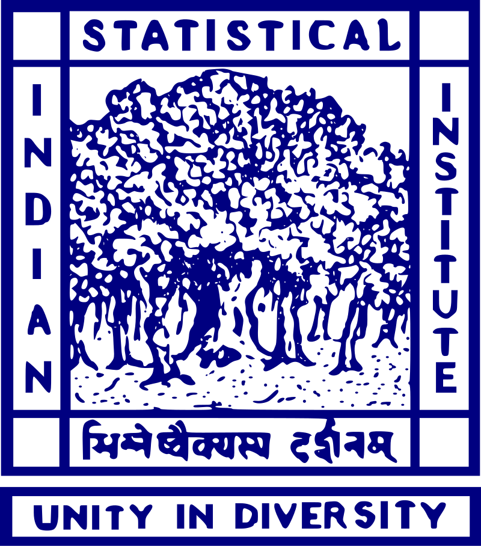

Representation and Generation using Manifold Analysis of Real and Synthetic Medical Images
Institute: Stony Brook University
Duration: March 2026 - Present
Advisor: Klaus Mueller
Investigating the geometric and topological structure of latent manifolds learned from real and synthetic medical images to better understand representation quality and generative behavior.
The project combines manifold learning, dimensionality reduction, and visualization-driven analysis to improve interpretability, realism assessment, and controllable medical image generation.
LDID: Anatomy-Aware and Pathology-Controlled Diffusion for 3D Lung CT Synthesis
Institute: Stony Brook University
Duration: October 2025 - Present
Advisor: Klaus Mueller
Developed an anatomy-aware and pathology-controlled 3D diffusion framework for lung CT synthesis, enabling realistic generation of clinically consistent pulmonary lesions with precise anatomical control.
The project combines mask-conditioned diffusion modeling with topology-aware structural guidance to improve lesion fidelity, anatomical realism, and trustworthiness in AI-driven medical imaging.
Topological Analysis of Loss Landscapes in Neural Networks
Institute: Indian Institute of Science (IISc), Bangalore
Duration: Jul 2024 - August 2025
Supervisor: Prof. Vijay Natarajan
Analyzed the loss landscape of neural network training using topological data analysis techniques such as contour trees, join trees, and split tree simplification to interpret training dynamics.

ACEV: Unsupervised Segmentation of Intersecting Manifolds
Institute: Indian Statistical Institute (ISI), Kolkata
Duration: May 2023 - Nov 2023
Supervisor: Prof. Ashish Ghosh
Developed an unsupervised segmentation method using eigenvector variation across intrinsic dimensions to distinguish intersecting manifolds in high-dimensional data.
View Project
Lumbar Spine Tumor Localization from MRI Images
Institute: University of Calcutta (AKCSIT Department)
Duration: Sept 2023 - Oct 2024
Supervisor: Prof. Amlan Chakrabarti
Segmented and localized lumbar spine tumors from T2-weighted MRI scans using deep learning-based medical image analysis techniques.
View Project
Lightweight Leaf Disease Detection for Edge Devices
Institute: University of Calcutta (AKCSIT Department)
Duration: Apr 2023 - Feb 2024
Supervisor: Prof. Soumya Sen
Designed a novel lightweight feature extraction model to detect plant diseases from leaf images, optimized for low-computation environments. Presented at ICSTA 2023.
View Project